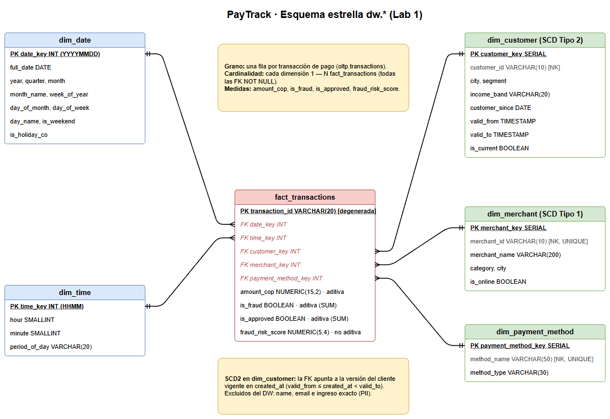

Entorno. PostgreSQL 16, datos sintéticos de generate_data.py (500 clientes, 8 comercios, 5 métodos, 90 días) con
50.000 y 500.000 transacciones. Los tiempos son la mediana de 5 ejecuciones de EXPLAIN (ANALYZE, BUFFERS) con caché
caliente (script benchmark.py; planes completos en resultados/). Validaciones: load_star.py
9/9 ✓ y check_queries.py 3/3 ✓ con ambos volúmenes.
| Consulta | 50K | 500K | Operaciones que dominan el plan (500K) |
|---|---|---|---|
| Q1 monto por categoría, 30 días | 13,0 ms | 143,5 ms | Parallel Seq Scan de transactions (descarta 330K filas por filtro) → Hash Join con merchants por VARCHAR → HashAggregate parcial + Gather Merge + Sort. Con 50K usa el índice de created_at, pero el Bitmap Heap Scan visita 569 de ~600 páginas. |
| Q2 tasa de fraude por segmento | 24,4 ms | 179,1 ms | Parallel Seq Scan completo (500K filas, 5.728 páginas) → Hash Join con customers por VARCHAR(10) → agregación de todas las filas. Sin filtro: ningún índice puede ayudar. |
| Q3 volumen por día y hora, 7 días | 8,7 ms | 126,0 ms | Bitmap Index Scan en idx_txn_created_at (43K filas) → Bitmap Heap Scan que lee 5.680 de 5.682 páginas → EXTRACT(DOW/HOUR) fila a fila → Sort de 43K filas por expresiones → GroupAggregate. |
¿Por qué el 3FN obliga a este trabajo? (1) Los atributos de análisis (category, segment) viven en otras tablas,
así que toda pregunta paga un join, y lo hace sobre llaves naturales VARCHAR. (2) Los atributos de calendario (día de la semana, hora)
no existen: se recalculan con EXTRACT en cada fila. Esa expresión no es indexable sin un índice funcional y obliga a ordenar por ella.
(3) Las filas quedan en el orden de llegada, no en el de las preguntas. En los datos generados la correlación física de created_at es
−0,002, así que el índice localiza 7 días de filas pero estas están repartidas en toda la tabla y el motor termina leyendo cada página.
(4) Los índices del OLTP sirven para búsquedas puntuales (customer_id, PK), no para barrer rangos y agregar millones de filas.
Con 500K transacciones diarias durante un año la tabla llega a ~182,5 M filas (≈16 GB de heap y ≈13 GB de índices, extrapolando
los 44 MB + 37 MB medidos para 500K). Q2 es O(N): extrapolando linealmente 179 ms × 365 ≈ 65 s, y eso suponiendo todo en memoria.
Como 29 GB no caben en shared_buffers, la lectura sería de disco y tardaría minutos. Q1 (30 días ≈ 15 M filas) y Q3
(7 días ≈ 3,5 M) tardarían decenas de segundos. Además competirían por E/S, caché y CPU con las ~6 escrituras por segundo del negocio, que es justo
lo que un sistema transaccional no puede permitirse.
Proceso de negocio: procesamiento de pagos. Grano: una fila por transacción de pago (el nivel atómico de
oltp.transactions). Elegimos el grano más fino porque permite responder cualquier agregación futura (por minuto, cliente o método),
cuadra 1:1 con la fuente (validado: conteos, montos, fraudes y aprobadas) y no obliga a rediseñar si aparece una pregunta nueva.
transaction_id se guarda como dimensión degenerada y es la PK de la tabla de hechos: garantiza el grano y conserva la trazabilidad hacia el OLTP.
| Dimensión | Atributos | Decisión |
|---|---|---|
dim_date / dim_time | año, trimestre, mes, semana, día de la semana, fin de semana, festivo / hora, minuto, franja del día | Separadas: 91 + 1.440 filas, en vez de una dimensión fecha-minuto de 131K filas. Precalculan lo que el OLTP hacía con EXTRACT. |
dim_customer (SCD2) | customer_id (NK), city, segment, income_band, customer_since, valid_from, valid_to, is_current |
Versionada. Índice único parcial: una sola versión vigente por cliente. |
dim_merchant (SCD1) | merchant_id (NK), merchant_name, category, city, is_online |
Se sobrescribe: un cambio de nombre no altera el análisis histórico. is_online se deriva de city = 'Online'. |
dim_payment_method | method_name (NK), method_type |
Enriquecida: method_type (card / digital_wallet / bank_transfer) no existe en el OLTP. |
Lo que NO llega al DW: name y email son datos personales sin valor analítico. El DW tiene muchos lectores
y la Ley 1581 de 2012 (habeas data) exige minimizar esos datos. El ingreso exacto (monthly_income_cop) se reemplaza por
income_band (low < 4 M, middle 4–10 M, high ≥ 10 M): conserva el valor analítico y reduce la sensibilidad. El status
textual se convierte en la medida is_approved. Del evento de fraude solo pasa risk_score; pattern y
detected_at pertenecen a otro proceso de negocio (una futura fact_fraud_event). Tampoco pasan las llaves técnicas del
OLTP (method_id).
Medidas. amount_cop: aditiva, se suma por cualquier dimensión. is_fraud e is_approved: banderas
que son aditivas como 0/1 (SUM(CASE…) = conteo). Las tasas (p. ej. % de fraude) no son aditivas: no se almacenan,
se calculan al consultar a partir de sus componentes aditivos, como en Q2. fraud_risk_score: no aditiva (solo AVG/MAX);
queda NULL cuando no hubo evento, por eso se carga con LEFT JOIN y AVG ignora esos valores. Este proceso no tiene medidas
semiaditivas; aparecerían en un snapshot de saldos de billetera, que se suman entre clientes pero no a lo largo del tiempo.
¿Por qué surrogate keys? (1) Con SCD2 un mismo customer_id tiene varias filas, así que la llave natural no puede ser PK.
(2) Aíslan al DW de la fuente: reasignación o reutilización de IDs, migraciones, o integrar otra fuente (otro banco) donde C000001
sea otro cliente. method_id es un SERIAL que depende del orden de inserción en el OLTP. (3) Un INT de 4 bytes hace los
joins e índices más pequeños que un VARCHAR. (4) Permiten filas especiales (desconocido, late-arriving).
¿Por qué SCD Tipo 2 en cliente? segment (mass → premium → high_value) y city cambian con el tiempo; el propio
generador lo simula en change_customers(). Si se sobrescribe (SCD1), todas las transacciones pasadas se reasignan al segmento nuevo.
Por ejemplo, un cliente que cometió fraude siendo mass y luego sube a premium inflaría retroactivamente la tasa de fraude de
premium, y el reporte del mes pasado cambiaría sin que cambiaran sus datos. Con SCD2 cada versión tiene un intervalo semiabierto
[valid_from, valid_to), y la carga de hechos une cada transacción con la versión vigente en su created_at.
En la carga inicial: valid_from = created_at del cliente, valid_to = 9999-12-31, is_current = TRUE.
Por eso Q2 no filtra por is_current: customer_key ya apunta a la versión correcta ("tal como era"), y filtrar
descartaría las transacciones ligadas a versiones históricas.
Decisiones físicas. Todas las FK son NOT NULL con REFERENCES (integridad referencial). La tabla de hechos se
carga en orden cronológico (ORDER BY created_at), como haría una carga incremental diaria. Así, la correlación física de
date_key queda en 1,000, condición necesaria para que el índice de fechas sirva (Parte D).
| Consulta | OLTP 50K | OLAP 50K | OLTP 500K | OLAP 500K | Buffers leídos 500K (OLTP → OLAP) | Plan OLAP |
|---|---|---|---|---|---|---|
| Q1 | 13,0 | 19,4 | 143,5 | 151,1 | 5.707 → 5.205 | Parallel Seq Scan + 2 Hash Join (dim_date, dim_merchant) |
| Q2 | 24,4 | 24,6 | 179,1 | 183,2 | 5.728 → 5.217 | Parallel Seq Scan + Hash Join (dim_customer) |
| Q3 | 8,7 | 3,6 | 126,0 | 47,5 (30,1*) | 5.839 → 522 | Nested Loop: dim_date (8 filas) × Index Scan idx_fact_date |
Tiempos en ms. *Con solo idx_fact_date en el experimento de índices. Con 500K las consultas que barren mucho usan 2 workers paralelos.
Q3 es 2,4–4,2× más rápida en OLAP y lee 11× menos páginas. El filtro de 7 días se resuelve sobre dim_date (8 filas), y por
cada date_key un Index Scan lee un bloque contiguo de ~5.400 hechos. Día de la semana y hora son atributos precalculados en las
dimensiones (Hash Join con dim_time), no EXTRACT por fila, y el agrupamiento es un HashAggregate en vez de
Sort + GroupAggregate. En el OLTP el índice sobre created_at no ahorra E/S porque las filas están desordenadas.
Q1 y Q2 cuestan prácticamente lo mismo en ambos modelos. Q2 agrega el 100 % de los hechos y Q1 el 33 % (30 de 91 días). En ambos casos
el plan óptimo es leer la tabla completa en paralelo y unirla por hash con dimensiones diminutas, y eso hacen los dos modelos. La tabla de hechos es
solo un 9 % más pequeña (40 vs 44 MB): en un almacenamiento por filas cada fila se lee completa, y el VARCHAR(20) de
transaction_id domina su ancho. Con 50K, Q1 en OLAP es algo más lenta porque PostgreSQL no tiene star transformation:
no sabe qué date_key cumplen el filtro de dim_date hasta hacer el join, así que hace hash join sobre todos los hechos.
La ventaja del modelo estrella en Q1/Q2 no es la velocidad en este motor. Es tener consultas simples y homogéneas, resultados reproducibles
(SCD2), aislamiento de la carga transaccional y una estructura lista para almacenamiento columnar o particionado (Lab 2: Parquet/Delta + Athena),
donde la tabla de hechos se lee solo en las 2–3 columnas que usa cada consulta.
fact_transactions (500K, ms)| Escenario | Q1 | Q2 | Q3 | Plan |
|---|---|---|---|---|
| Sin índices | 178,5 | 238,3 | 144,4 | Seq Scan en las tres |
Solo idx_fact_date | 144,4 | 160,9 | 30,1 | Q3 cambia a Nested Loop + Index Scan |
Solo idx_fact_customer | 154,4 | 205,3 | 119,1 | Seq Scan en las tres (índice ignorado) |
Solo idx_fact_merchant | 138,2 | 165,5 | 104,6 | Seq Scan en las tres (índice ignorado) |
| Los tres | 131,9 | 165,1 | 29,5 | Igual que solo idx_fact_date |
No todos ayudan. Solo idx_fact_date cambia un plan. En Q1 y Q2 el plan es idéntico en los cinco escenarios, así que las
diferencias de ±20 % son ruido de medición (carga del equipo), no efecto de los índices. idx_fact_customer e
idx_fact_merchant nunca se usan en estas consultas porque agregan grupos enteros. Cada índice ocupa ~3,5 MB por cada 500K filas
y encarece todas las cargas. Decisión final (star_schema.sql): conservar idx_fact_date; conservar
idx_fact_customer para el drill-down de un cliente (investigación de fraude, 0,2 % de filas, muy selectivo); y
no indexar merchant_key (8 valores, ~12,5 % de filas cada uno).
random_page_cost = 4), y un Index Scan además consulta el índice y puede volver varias veces a la misma página.
Cuando la consulta necesita una fracción grande de las filas (Q1: 33 %, Q2: 100 %), o las filas buscadas están dispersas (correlación ≈ 0, como en
el OLTP), terminaría leyendo casi todas las páginas de forma aleatoria. Leerlas en orden, y en paralelo, es más barato. El índice solo gana si la
consulta es selectiva y las filas están agrupadas físicamente. Por eso la carga cronológica fue la decisión que hizo útil a
idx_fact_date. A mayor escala, un índice BRIN sobre date_key (pocos KB) o particionar la tabla de hechos por mes
lograrían lo mismo para Q1.diagrama_esquema_estrella.drawio)